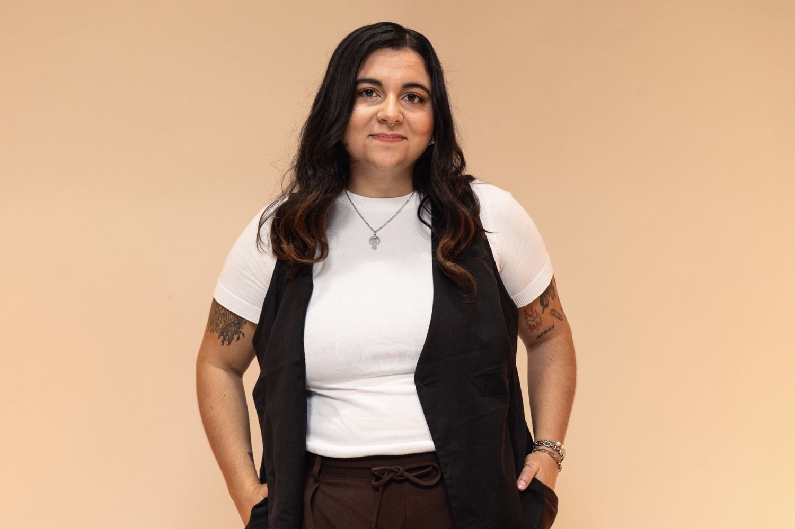
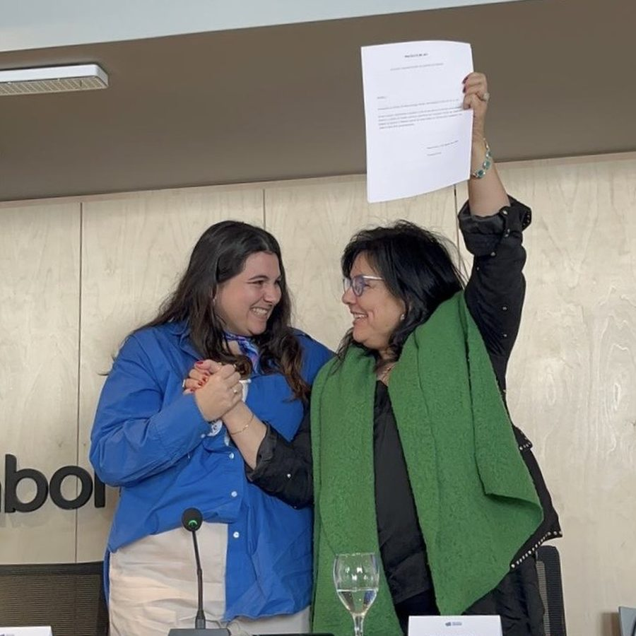
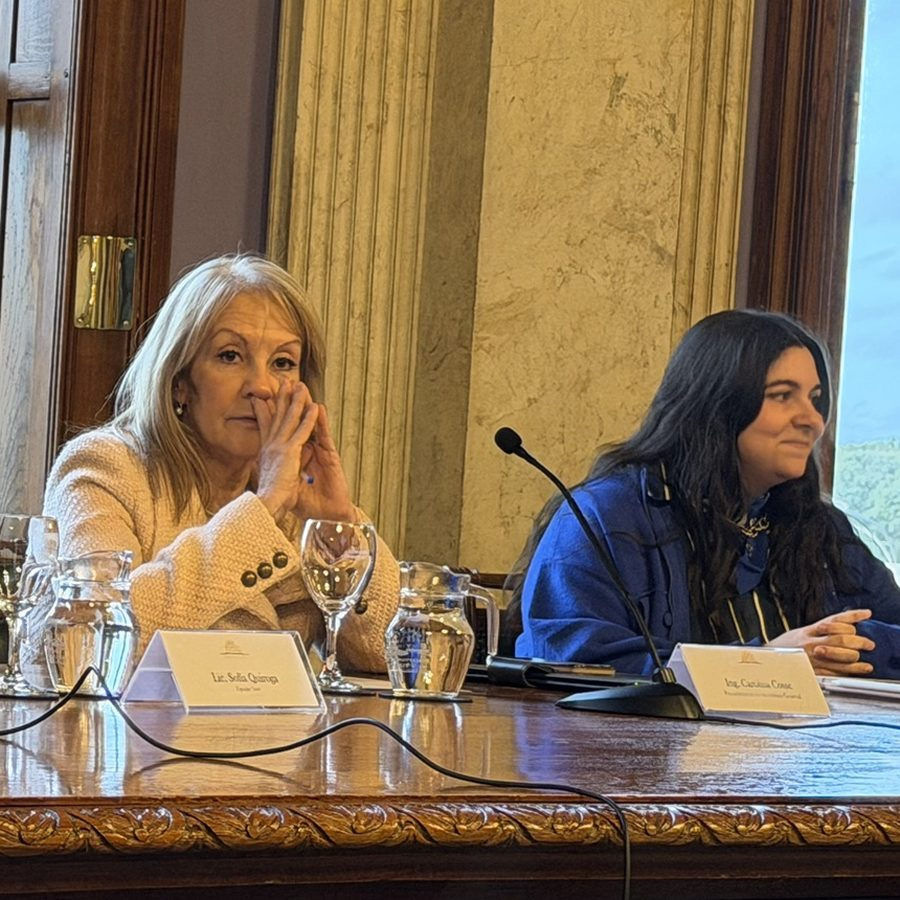
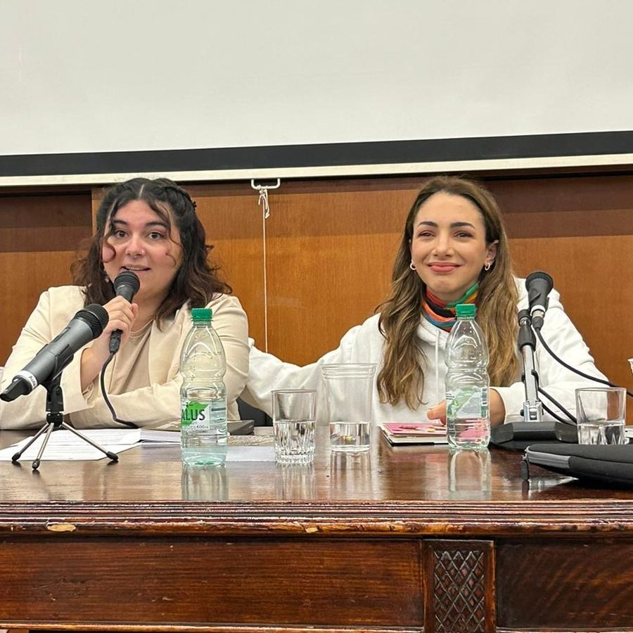
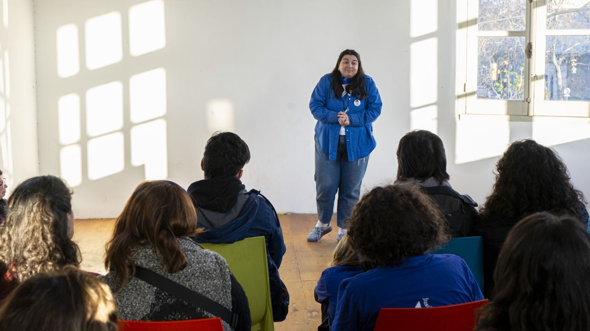
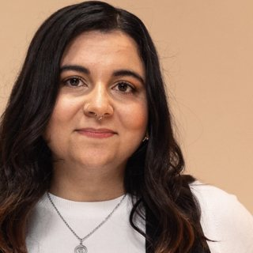
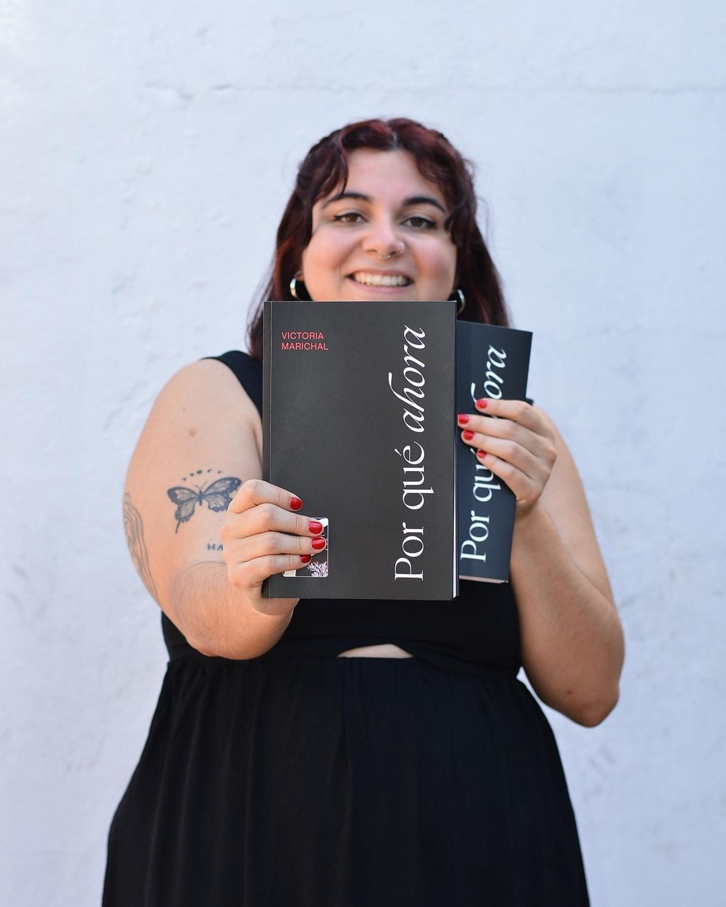
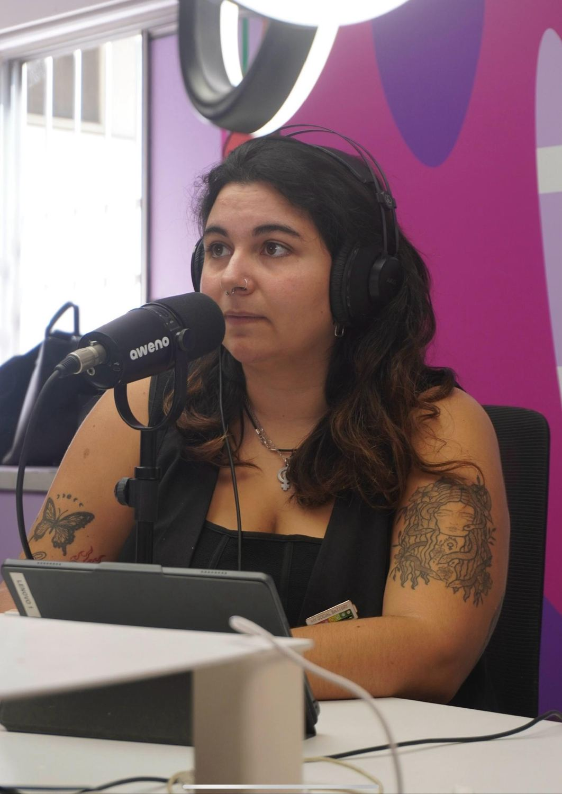
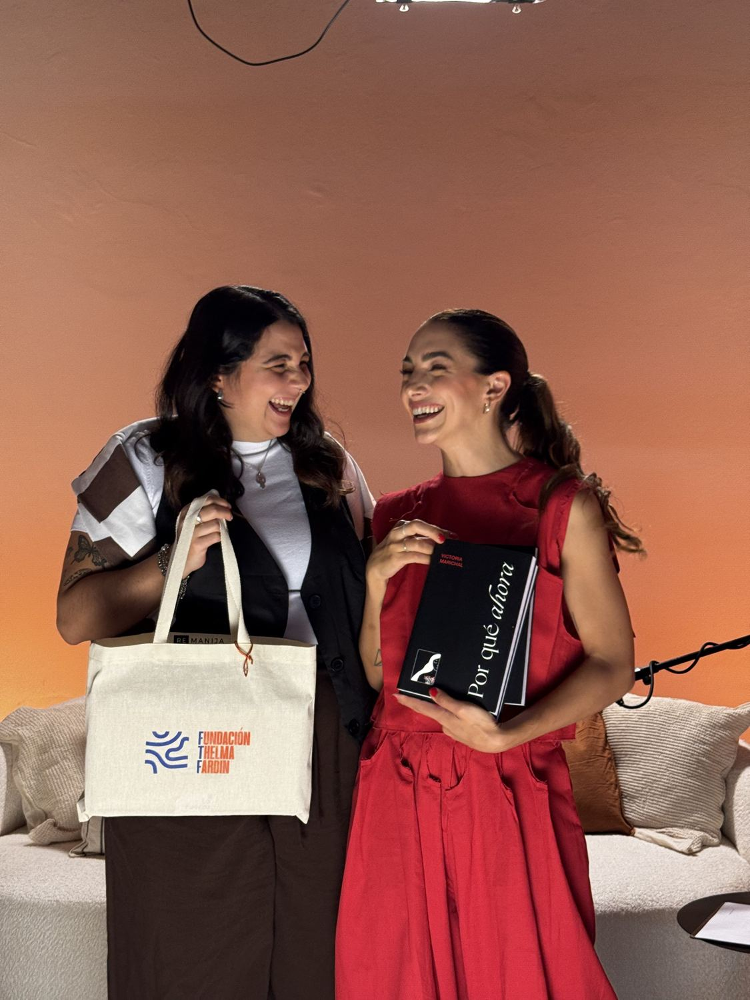
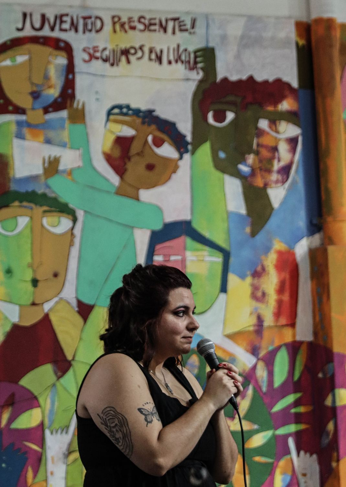

Comprensión integral de las violencias sexuales
Herramientas conceptuales y prácticas para el abordaje, la prevención y la reparación. Coordinación académica y docencia: Victoria Marichal.
Ver programa completoLicenciada en Psicología, Magíster en Género, Terapeuta EMDR y Psicotraumatóloga.Feminismo, diversidad, sexualidad, violencias y trauma. Clínica, docencia, formación institucional, investigación e incidencia en políticas públicas. Montevideo, Uruguay.

Soy Victoria Marichal, licenciada en Psicología y magíster en Género (FLACSO Uruguay). Acompaño procesos vinculados al trauma y las violencias de género, la sexualidad, las orientaciones sexuales y las identidades de género, las no monogamias éticas, y la diversidad y emancipación corporal, desde la psicotraumatología, el modelo EMDR y una perspectiva feminista, interseccional y afirmativa de la diversidad.
El sufrimiento psíquico no se produce en el vacío. Los procesos psicológicos están condicionados por las condiciones materiales y sociales en las que vivimos y por las violencias estructurales (patriarcales, cisheteronormativas, racistas, capacitistas y de clase) que organizan nuestras vidas, nuestros cuerpos y nuestros vínculos. Por eso leo el malestar como una respuesta situada a esas condiciones y entiendo que acompañar también implica trabajar para transformarlas. Desde ahí hago clínica, formo equipos, investigo e incido en políticas públicas.
Psicoterapia individual y de pareja con adultxs, desde un abordaje psicotraumatológico, con perspectiva de género y enfoque EMDR. Trauma complejo, violencias sexuales, sexualidad y diversidad.
Posgrado en Pareja y Sexualidad (SASH). Trabajo desde una perspectiva afirmativa con personas LGBTIQ+, con vínculos no monógamos éticos, con la diversidad y la emancipación corporal, y con la sexualidad como dimensión de salud, placer y derechos, sin patologizar las existencias.
Soy fundadora e integrante de Proyecto Ikové, colectivo que trabaja en prevención, reparación y justicia frente a las violencias sexuales. Desde ahí acompañamos, formamos equipos e incidimos en la agenda legislativa.
Magíster en Género con mención en Violencia Basada en Género (FLACSO Uruguay), con una tesis sobre psicoterapia informada en trauma como política pública. Co-redactora del proyecto de ley para tipificar el suicidio femicida como delito autónomo e impulsora de la imprescriptibilidad de los delitos sexuales contra niñas, niños y adolescentes.



Equipo que coordino
«El lugar en el que puedo ser».
Red clínica de psicólogas con perspectiva de género y diversidad y enfoque informado en trauma. Ofrecemos atención psicológica, covisión, cursos y talleres para equipos e instituciones.
Herramientas conceptuales y prácticas para el abordaje, la prevención y la reparación. Coordinación académica y docencia: Victoria Marichal.
Ver programa completoCurso para profesionales de salud mental, trabajo social, educación, derecho y áreas afines que trabajan con personas que atraviesan situaciones de violencia. No requiere formación previa e incluye certificado de aprobación.
Clase en el Diploma en Paternidades y Masculinidades sobre cuerpo, sexualidad y mandatos de rendimiento.
Invitarme a dar una claseFundamentos para una atención respetuosa y afirmativa, que no patologice las existencias ni las formas de vincularse.
Herramientas conceptuales y prácticas para el abordaje, la prevención y la reparación
Las violencias sexuales son una problemática estructural, con consecuencias subjetivas, vinculares, sociales e institucionales. El curso propuso un recorrido para comprender no solo sus manifestaciones, sino también las dinámicas de poder, silenciamiento, impunidad y revictimización que las sostienen, articulando la perspectiva de género, los derechos humanos, los estudios sobre trauma, el acceso a la justicia, la prevención y la reparación.
Estuvo dirigido a profesionales, estudiantes avanzadxs, referentes institucionales e integrantes de organizaciones sociales y comunitarias de salud, salud mental, educación, trabajo social, derecho, políticas públicas y recursos humanos.
Definiciones básicas, tipos y manifestaciones. Consentimiento, deseo, coerción y abuso de poder. Mitos frecuentes, impunidad social y normalización.
Prevalencia, estadísticas y subregistro. Grupos más expuestos y factores de vulnerabilidad. La violencia sexual como problema público y de salud pública.
Asimetrías de poder, manipulación, amenaza y dependencia. Secreto y dificultades para la revelación. Culpa, vergüenza y ambivalencia. Respuestas sociales frente a la revelación.
Abuso sexual hacia NNA. Violencia sexual en vínculos sexoafectivos. Violencia sexual grupal. Violencia sexual en el colectivo LGBTIQ+.
Aportes de una sobreviviente en clave de resistencia y reparación colectiva. Protocolo de Palermo, ciclo de la trata, mitos y estereotipos. Barreras de salida y detección temprana.
Indicadores posibles y límites de su interpretación. Señales en niñeces, adolescencias y adultez, en contextos clínicos, educativos, comunitarios y laborales. Criterios éticos frente a la sospecha.
Trauma y estrés traumático. Hiperactivación, bloqueo y disociación. Memoria traumática. Efectos en autoestima, cuerpo, sexualidad y vínculos.
Daño acumulativo, efectos diferidos y no lineales. Suicidabilidad en contextos de trauma e impunidad. El suicidio femicida como expresión extrema del daño y la falta de reparación.
Integración de contenidos sobre definiciones, dinámicas, detección e impacto.
Qué hacer y qué evitar ante una revelación. Escucha validante, criterios de seguridad y centralidad de la palabra de la víctima. Primera contención y derivación responsable.
Barreras formales e informales. Sesgos de género y problemas de credibilidad. Tiempos judiciales y revictimización secundaria. Desafíos para una respuesta institucional reparadora.
Verdad, reconocimiento y responsabilidad. Reparación simbólica y material. El papel de la psicoterapia, los vínculos y las instituciones. No linealidad de los procesos reparadores.
La ESI como herramienta para prevenir la violencia sexual y construir culturas del cuidado: cuerpo, consentimiento, límites, vínculos respetuosos y revisión crítica de las masculinidades. La ESI también como herramienta de reparación.
Aportes construidos desde la experiencia colectiva. Recomendaciones para profesionales e instituciones. Justicia, reparación y transformación colectiva.
Integración de los ejes de justicia, reparación, prevención y perspectivas de sobrevivientes.
Trauma vicario, fatiga por compasión y burnout. Límites del rol. Autocuidado, cuidado colectivo, supervisión y trabajo en red.
Para invitarme a dar una clase, o para que te avise cuando abra una nueva edición o un curso nuevo.

Desde 2020 diseñamos talleres según la realidad de cada equipo: empresas, organizaciones sociales, servicios de salud y colectivos feministas.
Cómo acompañar a personas adultas sobrevivientes de violencia sexual, sin invadir, presionar ni revictimizar. Para familiares, parejas, amistades, profesionales y cualquier persona interesada. No requiere formación previa.
Elaboración de protocolos de actuación frente a la violencia basada en género, como el realizado para el Banco de Seguros del Estado (2024).
ConsultarContanos qué necesita tu equipo y te escribimos con una propuesta a medida.

Psicotraumatología, EMDR, violencias sexuales, sexualidad y diversidad. Adultxs y parejas.
No hace falta que expliques tu historia acá. Con unas pocas líneas alcanza para que una psicóloga del equipo se comunique con vos.
Si estás en una situación de riesgo ahora, llamá al 911 o a las líneas que figuran en Recursos.
Guía de acompañamiento para familiares y allegadxs de sobrevivientes de violencia sexual: parejas, familias y espacios laborales. Incluye recursos específicos de Uruguay.
Acceder a la guía ↗ Completás un breve formulario y accedés a la guía
Un ensayo sobre las consecuencias de la violencia sexual, en primera persona. Poesía, narrativa, citas, capturas, teorías, estadísticas e ilustración, entramadas en una guía para la comprensión feminista de la violencia sexual, escrita desde Uruguay.
Por qué ahora es un ensayo sobre las consecuencias de la violencia sexual. Es la autobiografía de una víctima que el patriarcado no se espera. Es la cartografía de un cuerpo donde florecen las grietas. Es el relato de una temporalidad que no te contaron, la del abuso, cronología de agujas muertas. Es el pantano y es el portal. En la alquimia de ese tránsito está Victoria Marichal. Activista por los derechos de las mujeres y de la población lgbtiq+, profesional de la salud mental y de aquí en más: autora. La publicación de este libro demuestra que ante un Estado ausente, podemos encontrar justicia en la literatura.
Es el canto agónico y triunfante de una historia entramada por diversos lenguajes. Poesía, narrativa, citas, capturas, teorías, estadísticas. Es una guía imprescindible para la comprensión feminista de la violencia sexual, y por ende, para desculpabilizarnos y reivindicar nuestro derecho a vivir vidas dignas mientras buscamos justicia. Un flow imparable donde la ilustración es clave. Palabras e imágenes gritan al unísono: la construcción de belleza es un hecho político.
Este libro es un logro desde el punto de vista de la representación, una victoria feminista que apunta a lo invisibilizado. Victoria decodifica milimétricamente sus memorias y nos permite levantar imágenes fundamentales, por ejemplo de un proceso judicial. Piezas del rompecabezas patriarcal que toda feminista quiere armar (para explotar). Esas que el canon literario (cis, blanco, masculino y heteronormado) nos ha robado. Por qué ahora nos enfrenta a sus nudos con humor y entretenimiento. Es un manifiesto del goce, la ternura y la amistad. Acompaña con altura la revolución literaria de una Belén López Peiró, una Virgine Despentes; con el plus de situarse aquí, en Uruguay, este tesorito hundido de silencios. Deseo que su lectura arrase en los más diversos contextos, y ojalá, en la educación formal.
Mariana Olivera NaviliatEn los medios
la diaria · Brecha · El Observador · Caras y Caretas · Montevideo Portal · Equality Now · Teledoce · Canal 10 · Subrayado · VTV · TV Ciudad · Arriba Gente · UNI Radio · 970 Universal · JUSTAS · Woman Times



Para consultas sobre cursos, talleres para tu equipo, entrevistas o colaboraciones. Para atención psicológica, usá el formulario de TEKOHA.